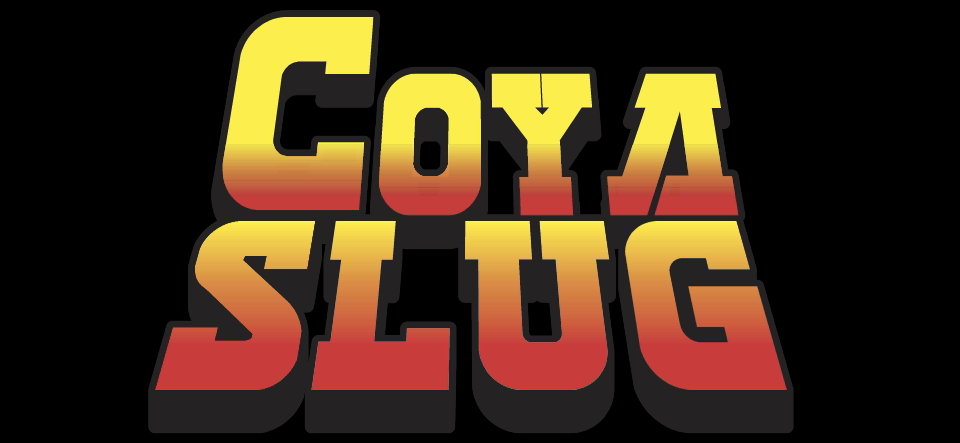

Featured Projects

Ay Chanda!
Mobile endless runner built as a university final project with an 8-person team under Agile workflow.
<<<<<<< Updated upstreamGameplay & UI Programmer
=======Designer & Gameplay/UI Programmer
>>>>>>> Stashed changesView full case study →

PurifyingBubble
Physics puzzle where the player rotates the world to guide a bubble across a desert, avoiding thorns.
Game/Level Designer & Programmer
View full case study →
GasHero
A humorous platformer: an absurd superhero fights pollution... by polluting. Dash, UI, and Factory pattern.
Gameplay & UI Programmer
View full case study →

Coya Slug
Retro light gun shooter: a Coya fights aliens with carnival foam, built with OOP principles and coroutines.
<<<<<<< Updated upstreamGameplay Programmer & Designer
=======Designer & Gameplay Programmer
>>>>>>> Stashed changesView full case study →

Pest Invasion
2D platformer where a shrunken inventor battles a pest swarm using custom enemy behaviors and sine-wave movement.
<<<<<<< Updated upstreamGameplay Programmer & Designer
=======Designer & Gameplay Programmer
>>>>>>> Stashed changesView full case study →